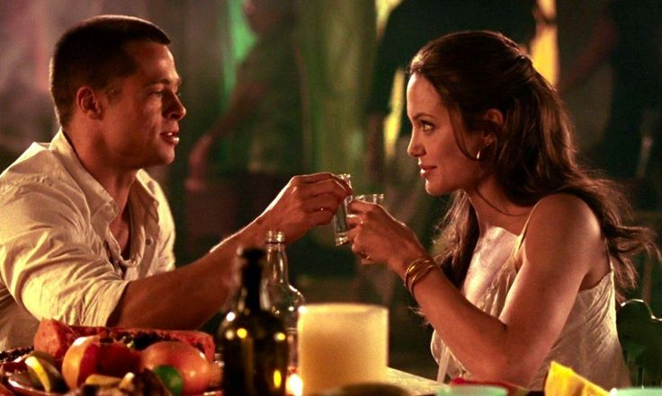
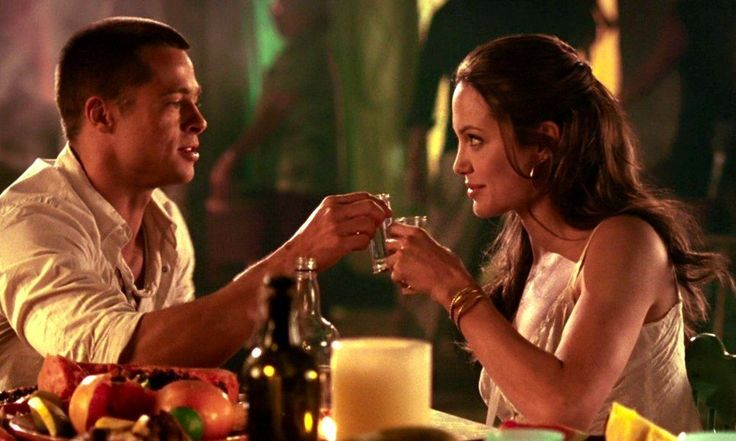

| Durata | 2h |
| Genere | Crime/Thriller |
| Anno di uscita | 2005 |
| Regista | John Powell |
La Storia
John e Jane Smith sono sposati da "cinque o sei anni". Il film si apre con una seduta dei coniugi presso lo studio di un consulente matrimoniale, mai inquadrato nel film. Alcune domande di rito e parte il flashback sul loro primo incontro, in Colombia: sei settimane dopo i due decideranno di sposarsi. E torniamo al presente. Schegge di vita quotidiana e uno scanzonato Benjamin Danz viene incaricato da un enigmatico personaggio di una misteriosa missione. Intanto emerge ciò che i trailer hanno ampiamente pubblicizzato: John e Jane Smith sono in realtà due killer professionisti, dipendenti da due differenti compagnie.
Entrambi ignorano la doppia vita condotta dal coniuge, finché non vengono separatamente incaricati di impedire il trasferimento di un detenuto, lo stesso Benjamin Danz. A quel punto i due entrano in contatto, si identificano a vicenda e vengono dunque incaricati dalle rispettive agenzie di eliminarsi l'un l'altro.
 
